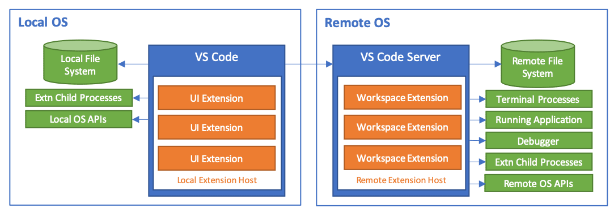
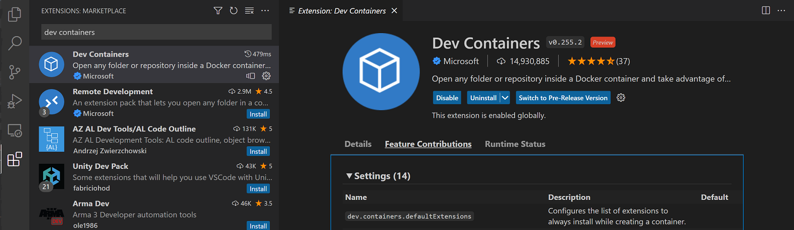

远程开发 FAQ
本文涵盖了每个 Visual Studio Code 远程开发扩展的常见问题。有关设置和使用各项功能的更多详细信息，请参阅 SSH、容器 和 WSL 文章。或尝试入门教程，帮助你在远程环境中快速上手。
有关 GitHub Codespaces 的问题，请参阅 GitHub Codespaces 文档。
通用
什么是 Visual Studio Code 远程开发？
Visual Studio Code 远程开发扩展包 允许你在容器中、在远程计算机上（通过 SSH）或在 Windows Subsystem for Linux 中打开任何文件夹，并利用 VS Code 的完整功能集。这意味着 VS Code 可以提供本地质量的开发体验——包括完整的 IntelliSense（自动补全）、调试等功能——无论你的代码位于何处或托管在哪里。
VS Code 远程开发相比本地编辑有哪些优势？
远程开发的一些优势包括：
- 能够在你本地运行环境之外的不同操作系统上进行编辑、构建或调试。
- 能够在与目标部署环境匹配的环境中进行开发。
- 使用比本地计算机更大或更专业的硬件进行开发。
- 能够编辑存储在其他位置（如云端或客户现场）的代码。
- 分离开发人员环境以避免冲突、提高安全性并加快上手速度。
与使用网络共享或同步文件相比，VS Code 远程开发提供了显著更好的性能，以及对开发环境和工具的更好控制。
远程开发扩展与 GitHub Codespaces 有何关系？
GitHub Codespaces 是一项服务，提供托管在云端的托管开发环境，可从 VS Code 和新的基于浏览器的编辑器访问。该服务还允许 VS Code 和基于浏览器的编辑器访问自托管环境（桌面或服务器），而无需 SSH 服务器甚至直接网络路由。你可以在 GitHub Codespaces 文档 中了解更多信息。
虽然远程开发和 Codespaces 扩展共享技术和功能，但远程开发扩展是单独发布的，可以独立于 GitHub Codespaces 运行。
远程开发扩展如何工作？
Visual Studio Code 远程开发允许你的本地 VS Code 安装通过将某些命令的执行移至"远程服务器"，从而透明地与远程计算机（无论是虚拟的还是物理的）上的源代码和运行时环境进行交互。当你连接到远程终结点时，VS Code Server 会被 VS Code 快速安装，并且可以托管直接与远程工作区、计算机和文件系统交互的扩展。

有关扩展的更多详细信息，请参阅支持远程开发。
远程开发扩展如何保证对远程计算机、虚拟机或容器的安全访问？
Visual Studio Code 远程开发使用现有的、众所周知的传输协议（如安全外壳协议）来验证和保护流量。除了这些众所周知的安全传输所使用的端口外，无需公开开放任何端口。
注入的 VS Code Server 以你登录计算机时使用的同一用户身份运行，确保 VS Code 及其扩展在没有权限的情况下不会被赋予不当的提升访问权限。该服务器由 VS Code 启动和停止，不会嵌入任何用户或全局登录或启动脚本中。VS Code 管理服务器的生命周期，因此你无需担心它是否在运行。
VS Code Server 可以单独安装或使用吗？
不可以。VS Code Server 是远程开发扩展的一个组件，由 VS Code 客户端管理。它在 VS Code 连接到终结点时由 VS Code 自动安装和更新，如果单独安装可能会很快过时。它不供其他客户端使用或许可。
VS Code Server 的连接要求是什么？
安装 VS Code Server 要求你的本地计算机对以下地址具有出站 HTTPS（端口 443）连接：
update.code.visualstudio.comvscode.download.prss.microsoft.com
默认情况下，Remote - SSH 将尝试在远程主机上下载，如果失败，则在建立连接后在本地下载 VS Code Server 并将其传输到远程。你可以通过 setting(remote.SSH.localServerDownload) 设置更改此行为，设置为始终在本地下载然后传输，或者从不本地下载。
Dev Containers 扩展始终在本地下载并传输到容器中。
你可以使用扩展：从 VSIX 安装... 命令在没有互联网连接的情况下手动安装扩展，但如果你使用扩展面板或 devcontainer.json 来安装扩展，你的本地计算机和 VS Code Server 将需要对以下地址具有出站 HTTPS（端口 443）访问权限：
marketplace.visualstudio.com*.gallerycdn.vsassets.io（Azure CDN）
最后，某些扩展（如 C#）会从 download.microsoft.com 或 download.visualstudio.microsoft.com 下载辅助依赖项。其他扩展（如 Visual Studio Live Share）可能还有其他的连接要求。如果遇到问题，请查阅扩展的文档以了解详细信息。
服务器和 VS Code 客户端之间的所有其他通信根据扩展通过以下传输通道完成：
- SSH：经身份验证的安全 SSH 隧道。
- 容器：Docker 配置的通信通道（通过
docker exec）。 - WSL：一个随机本地端口。
你可以在网络连接文章中找到 VS Code 本身需要访问的位置列表。
为什么在使用 Remote - 扩展时，我在容器工具扩展中看不到本地容器？
默认情况下，容器工具扩展将远程运行。虽然这在某些情况下是一个合理的默认设置，但这意味着当 VS Code 连接到远程 SSH 主机、容器或 WSL 时，该扩展可能不会显示本地容器。
你可以使用以下解决方案之一来解决此问题：
- 打开一个新的本地窗口（文件 > 新建窗口）并用它来处理本地容器。
- 安装 Dev Containers 扩展，并在需要查看本地容器时使用远程资源管理器。
- 仅限 WSL：使用 Docker Technical Preview for WSL 2 或配置 Docker Desktop 以在 WSL 1 中使用。
- 仅限 Dev Containers：在容器中转发 Docker 套接字并安装 Docker CLI（仅限）。
- 使用 extensionKind 属性 强制扩展为
ui。但是，这将导致某些命令无法正常工作。在主机上使用远程开发需要安装哪些 Linux 软件包或库？
远程开发需要内核 >= 4.18、glibc >=2.28 和 libstdc++ >= 3.4.25。最新的 x86_64 基于 glibc 的发行版具有最佳支持，但确切要求可能因发行版而异。
基于 musl 的 Alpine Linux 支持适用于 Dev Containers 和 WSL 扩展，而 ARMv7l（AArch32）/ ARMv8l（AArch64）在 Remote - SSH 中可用。但是，某些扩展中的原生依赖项可能导致它们在非 x86_64 glibc 发行版上无法运行。请注意，实验性 ARMv8l（AArch64）仅在 VS Code Insiders 中可用。
有关更多详细信息，请参阅使用 Linux 进行远程开发。
我可以在较旧的 Linux 发行版上运行 VS Code Server 吗？
从 VS Code 版本 1.99（2025 年 3 月）开始，VS Code 分发的预构建服务器仅兼容基于 glibc 2.28 或更高版本的 Linux 发行版。例如，包括 Debian 10、RHEL 8 或 Ubuntu 20.04。
如果提供了包含这些必需库版本的 sysroot，VS Code 仍将允许用户通过 Remote - SSH 扩展连接到 VS Code 不支持的 OS（没有 glibc >= 2.28 和 libstdc++ >= 3.4.25 的 OS）。这种方法为你和你的组织提供了更多时间来迁移到较新的 Linux 发行版。
| VS Code 版本 | 基本要求 | 备注 | ||
|---|---|---|---|---|
| -------------- | ------------------- | ------- | ||
| >= 1.99.x | 内核 >= 4.18, glibc >=2.28, libstdc++ >= 3.4.25, binutils >= 2.29 | <none> |
[!IMPORTANT]
此方法是一种技术变通方案，并非官方支持的使用场景。
按照以下步骤为这种变通方案配置你的环境：
- 构建 sysroot
我们建议使用 Crosstool-ng 来构建 sysroot。以下是一些你可以用作起点的示例配置：
以下示例容器也可用于创建安装了 Crosstool-ng 的环境：
FROM ubuntu:latest
RUN apt-get update
RUN apt-get install -y gcc g++ gperf bison flex texinfo help2man make libncurses5-dev \
python3-dev autoconf automake libtool libtool-bin gawk wget bzip2 xz-utils unzip \
patch rsync meson ninja-build
# 安装 crosstool-ng
RUN wget http://crosstool-ng.org/download/crosstool-ng/crosstool-ng-1.26.0.tar.bz2
RUN tar -xjf crosstool-ng-1.26.0.tar.bz2
RUN cd crosstool-ng-1.26.0 && ./configure --prefix=/crosstool-ng-1.26.0/out && make && make install
ENV PATH=$PATH:/crosstool-ng-1.26.0/out/bin一旦你拥有安装了 Crosstool-ng 的环境并准备好了相关配置，运行以下命令来生成 sysroot：
mkdir toolchain-dir
cd toolchain-dir
cp <配置文件路径> .config
ct-ng build- VS Code Server 在安装过程中使用 patchelf 从 sysroot 中读取所需的库。
[!IMPORTANT]
已知 patchelf
v0.17.x会导致远程服务器发生段错误，我们建议使用 patchelf>=v0.18.x - 在远程主机上安装 patchelf 二进制文件和 sysroot
- 创建以下 3 个环境变量：
现在，你可以使用 Remote - SSH 扩展连接到远程设备。成功连接后，VS Code 将显示一个对话框和横幅消息，提示连接不受支持。
我可以在 32 位 ARM Linux 主机上运行 VS Code Server 吗？
VS Code 版本 1.122 是最后一个支持在 32 位 ARM Linux 主机上运行预构建服务器的版本。从 VS Code 版本 1.123 开始，你将需要使用受支持的 x86_64 或 ARM64 Linux 主机进行远程开发。
我可以安装单独的扩展而不是扩展包吗？
可以。远程开发扩展包 为你提供了一种便捷的方式来访问所有最新的远程功能。但是，你始终可以从 Marketplace 或 VS Code 扩展视图中安装单独的扩展。
- Remote - SSH
- Dev Containers
- WSL
如何查看和配置扩展设置？
与 Visual Studio Code 的其他部分 一样，你可以通过扩展的设置来自定义每个远程开发扩展。以 Dev Containers 为例，你可以通过在扩展视图中打开扩展（kb(workbench.view.extensions)），然后导航到功能贡献来查看所有 Dev Containers 设置的列表：

WSL
与将 WSL 用作终端相比，该扩展有何优势？
你可以将 WSL 视为在 Windows 上运行的 Linux 计算机，你可以在其中安装 Linux 特定的框架/工具（例如 Python、Go、Rust 等），而不会影响你的 Windows 设置。然后，你可以使用 VS Code 和 WSL 扩展在 WSL 中已安装内容的上下文中进行开发，与 Windows 上安装的内容隔离开来。
例如，你可以在 WSL 中安装 Go 技术栈（编译器、调试器、代码检查器等）。如果你只在 Windows 上运行 VS Code，你还必须在 Windows 上安装相同的 Go 技术栈才能获得智能补全、调试、转到定义导航等功能。而且由于语言服务在 Windows 上运行，它们不知道 WSL 中有什么。
确实，你可以从 Windows 运行 WSL 中的二进制文件，反之亦然，但常规的 VS Code 扩展不知道如何做到这一点。我们最初就是这样开始在 WSL 中支持调试的，但很快意识到我们必须更新所有扩展以了解 WSL。
我们决定改为让 VS Code 的一部分在 WSL 中运行，并让 Windows 上运行的 UI 与 WSL 中运行的 VS Code Server 进行通信。这就是 WSL 扩展所实现的功能，有了它，Go 扩展与其余 Go 工具（编译器、调试器、代码检查器）一起在 WSL 中运行，而 VS Code 在 Windows 上运行。
通过这种方法，智能补全等语言功能可以直接针对 WSL 中的内容正常工作，而无需在 Windows 上设置任何内容。你无需担心路径问题或在 Windows 上设置不同版本的开发技术栈。如果你要将应用程序部署到 Linux，你可以设置你的 WSL 实例，使其看起来像你的运行时环境，同时仍在 Windows 上获得丰富的编辑体验。
扩展作者
作为扩展作者，我需要做什么？
VS Code 扩展 API 抽象了本地/远程的细节，因此大多数扩展无需修改即可工作。但是，由于扩展可以使用任何 node 模块或运行时，因此可能存在需要调整的情况。我们建议你测试你的扩展（特别是在容器中），以确保不需要任何更新。有关详细信息，请参阅支持远程开发。
当用户远程连接时，扩展可以访问本地资源或 API 吗？
当 VS Code 连接到远程环境时，扩展被分类为 UI 或工作区扩展。UI 扩展在本地扩展主机中运行，可以提供 UI 或个性化功能（例如主题），并且可以访问本地文件或 API。工作区扩展在远程扩展主机中与工作区一起运行，并且可以完全访问源代码、远程文件系统和远程 API。虽然工作区扩展不专注于 UI 自定义，但它们也可以提供资源管理器、视图和其他 UI 元素。
当用户安装扩展时，VS Code 会尝试推断正确的位置，并根据其类型进行安装。不需要远程运行的扩展（如主题和其他 UI 自定义）会自动安装在 UI 端。所有其他扩展都被视为工作区扩展，因为它们功能最全面。但是，扩展作者也可以通过 package.json 中的 extensionKind 属性来覆盖此位置。
如果你的扩展未按预期工作，有一些步骤可以检查 它是否在正确的位置运行，或者是否应该具有不同的 extensionKind。另请参阅支持远程开发，了解扩展作者需要了解的有关远程开发和 Codespaces 的更多详细信息。
许可和隐私
位置
你可以在此处找到 VS Code 远程开发扩展的许可证：
- Remote-SSH 许可证
- WSL 许可证
- Dev Containers 许可证
为什么远程开发扩展或其组件不开源？
Visual Studio Code 远程开发扩展及其相关组件使用开放的规划、问题和功能请求流程，但目前不开源。这些扩展共享的源代码也用于完全托管的远程开发服务中，如 GitHub Codespaces 及其相关扩展。
有关更多信息，请参阅 Visual Studio Code 与 'Code - OSS' 的差异 和 Microsoft 扩展开源许可 文章。
远程开发扩展可以连接到哪里有什么限制吗？
你可以自由地将扩展用于个人或企业用途，连接到自己的物理计算机、虚拟机或容器。这些可以在本地、你自己的私有云或数据中心、Azure 或其他云/非云托管提供商中。你不能基于扩展或其相关组件构建公共产品或服务（见下一个问题）。
我可以使用 VS Code 远程开发扩展来构建我自己的产品或服务吗？
你可以将扩展与你自己的内部或私有服务一起使用。你不能基于 VS Code 远程开发扩展或其相关组件（例如 VS Code Server）构建公共或商业服务。你不能创建扩展或操作远程开发扩展的其他扩展。虽然许可证声明你不得"将软件作为独立或集成的产品提供，或将其与你自己的任何应用程序结合供他人使用"，但你可以说明如何将扩展与你的服务结合使用。
我可以在自己的公共服务产品中重新打包或重用 VS Code Server 吗？
不可以。许可证规定你不得"将软件作为独立或集成的产品提供，或将其与你自己的任何应用程序结合供他人使用"，这意味着你不能基于 VS Code Server 构建公共产品或服务。
我是否可以将扩展用于 X，对此我有疑问，应该联系谁？
请提交一个 issue。
GDPR 和 VS Code 远程开发
VS Code 远程开发扩展遵循与 Visual Studio Code 自身相同的 GDPR 政策。有关更多详细信息，请参阅通用 FAQ。
问题或反馈
有问题或反馈？
- 请参阅提示和技巧。
- 在 Stack Overflow 上搜索。
- 添加功能请求 或报告问题。